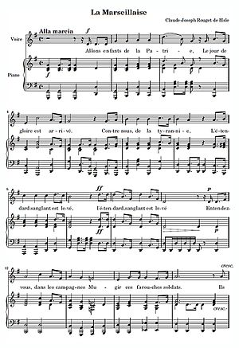
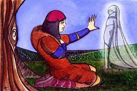

HIMNO(definicion)
Un himno es un canto o un texto lírico que expresa sentimientos positivos, de alegría y celebración.
En la antigüedad era una composición coral en honor a una divinidad y es retomado con pleno valor litúrgico en la literatura latina cristiana de la Edad Media (por ejemplo, el Pange lingua escrito por Tomás de Aquino para conmemorar el día del Corpus).
El vocablo deriva del idioma griego ὕμνος (hymnos) y pasó a casi todas las lenguas de Europa en un mismo sentido o significación.
Es, además, la representación musical o literaria de un acontecimiento tan elevado que produce la necesidad de plasmarlo en música o texto.
Un himno puede estar dedicado a dioses, un santo, un héroe o a una persona célebre. CANCION(definicion)
La canción lírica es una composición en forma de poema admirativo que denota una emoción y un tema. Por lo regular siempre son de tipo amoroso. Sus orígenes se remontan a los trovadores provenzales, quienes escribían juntas letra y música. Más adelante el género lírico de la Provenza dio origen al
soneto.
VE UN EJEMPLO DE ESTOS TEMAS: